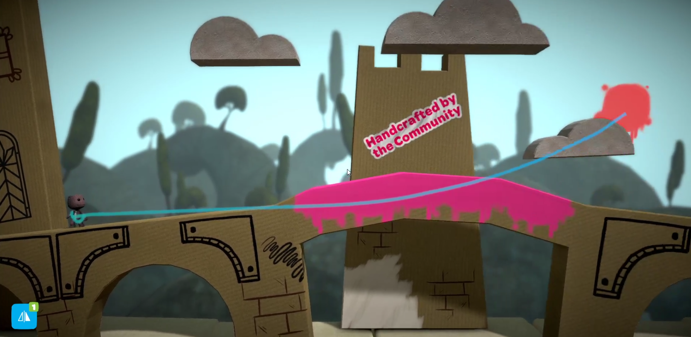
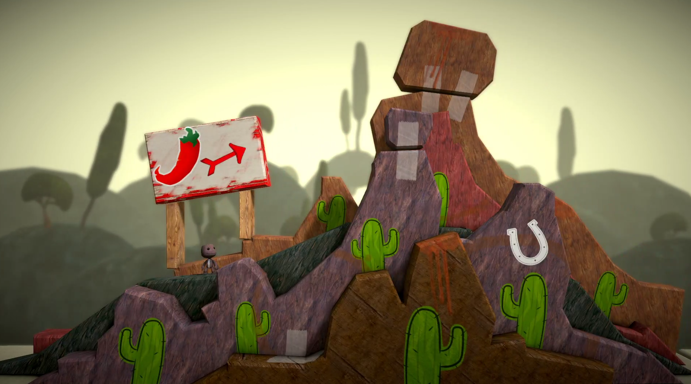
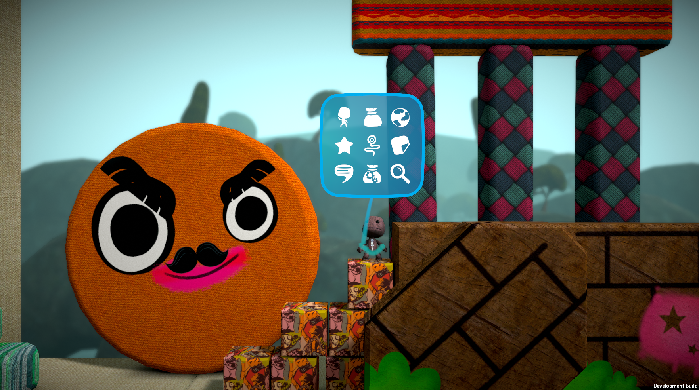
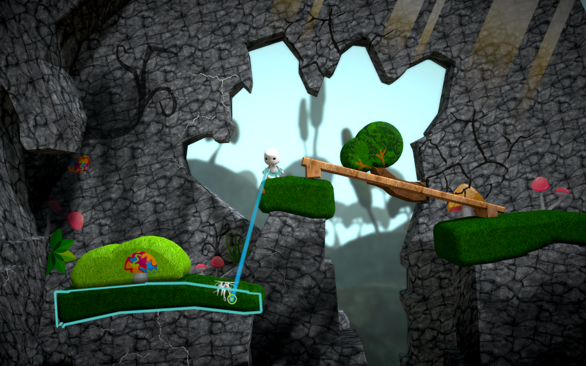
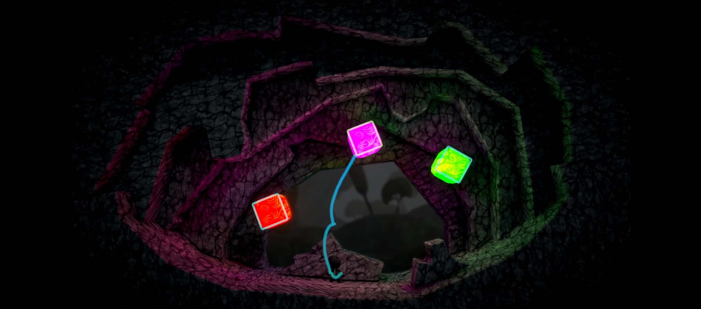
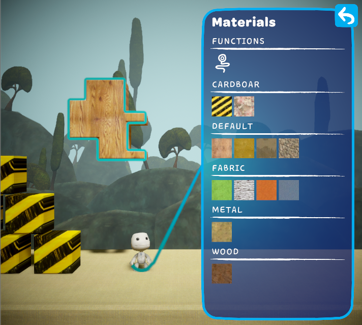

LittleBigPlanet Restitched
A fangame of the LittleBigPlanet series. This began as an experiment with Angus Johnson's ClipperLib library. I invited an established group of LittleBigPlanet level builders and artists called Trixel Creative to help turn it into a full game.
We got pretty far together, eventually uploading a Youtube trailer collecting half a million views. The game was covered by Eurogamer and a few other gaming news sites.
Sony, who owns the LittleBigPlanet IP, wasn't pleased with us and asked us to stop development. The project lives on under a new name and branding, but I'm no longer involved with it.
I was primarily responsible for the level creation system which involved procedural geometry generation and tricky body grouping/separation behavior (where objects 'glued' together would behave as one physics body). I also helped with the artistic side of things in creating promotional renders, setting up environment lighting, and creating in-game models.
Stripped-down source and build on GitHub
2019 - 2021
     